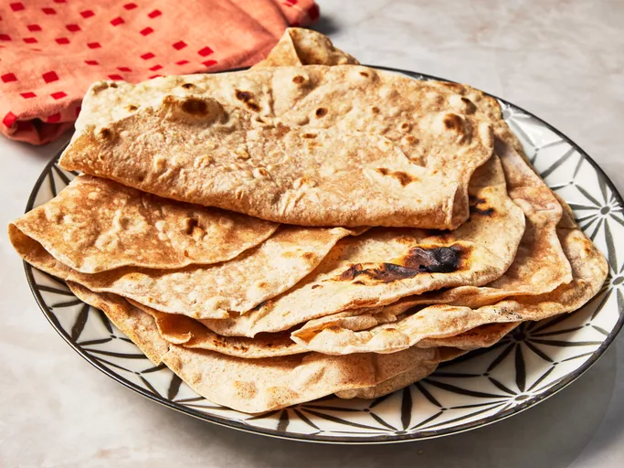

Indian Chapati
Home

Discription
This chapati recipe is simple and delicious. Serve this Indian bread with curries or use it as a sandwich wrap. Enjoy!
Follow this easy steps to get perfectly cooked Chapati every time!
Ingredients
- 1 cup whole wheat flour
- 1 cup all-purpose flour
- 1 teaspoon salt
- ¾ cup hot water or as needed
- 2 tablespoons olive oil or vegetable oil
Steps
- Gather all ingredients.
- Mix whole wheat flour, all-purpose flour, and salt in a large bowl. Use a wooden spoon to stir in water and oil. Mix until a soft, elastic dough forms and add more water, if needed.
- Knead dough on a lightly floured surface until smooth.
- Divide dough into 10 equal portions, or less if you want larger chapatis. Roll each piece into a ball and let rest for a few minutes.
- Heat a lightly greased skillet over medium heat. Use a rolling pin to roll dough balls out on a lightly floured surface until very thin.
- When the skillet starts to smoke, place a chapati in it. Cook until bottom has brown spots, about 30 seconds, then flip and cook 30 seconds more.
- Repeat to cook remaining chapatis.
Back to home